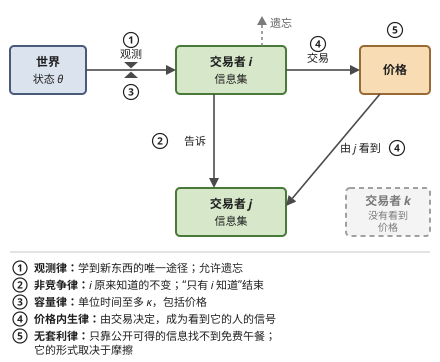

第 3 章 五条约束律
Joel Hasbrouck（1991）用纽约证券交易所和美国证券交易所 80 只上市股票在 1989 年第一季度的数据做了估计。他的估计提示，大单与买卖价差（bid–ask spread）变宽相联系；买卖价差是同一时刻交易商卖出一只股票与买入这只股票的价格之差。他的估计还提示，价差相对宽时成交的交易，价格冲击（price impact）更大，也就是把价格推得更远。他认为价差变宽与交易商的一种推断相符，即交易商从一笔大单推断，新信息更可能已经到来。我们把它读作一笔交易成了看到它的人的信号，是本书每个模型都遵守的五条约束律（constraint law）之一的例子（本书的判断）。
3.1 一笔大单与变宽的价差
Hasbrouck 研究的是专营商市场（specialist market）。在这种市场里，一位指定的做市商（market maker），即接下对手方订单的交易商，报出它买入时的买价和卖出时的卖价。他的数据是 1989 年第一季度 62 个交易日里，纽约、美国两个交易所和各地区交易所按顺序记录的成交与报价，涉及在前两个交易所上市的 80 只股票。1
他把成交和报价修正当作一个向量自回归（vector autoregression），即一组方程，用几条序列全部的过去值来预测其中每一条，时间按成交笔数计；一笔交易的信息效应，他用这笔交易出乎意料的部分对报价的最终影响来量，出乎意料的部分就是过去的成交和报价修正没有预测到的那部分。
在他的代表性股票 Ames 百货公司（Ames Department Stores，简称 ADD）的价差方程里，对全部交易项一起做的检验，以优于 0.001 的水平拒绝了交易不改变价差这一假设。在整个样本里，80 家公司中有 77 家的数据在 0.05 的水平上拒绝了这一假设，不过这 80 个检验彼此并不独立（本书的判断）。他只对 ADD 一只股票，画出了模型推出的价差在买入 1,000 股、10,000 股和 50,000 股之后的走势，并写道，“对最大的交易规模，价差暂时变宽”。他只对一只股票画出了这次变宽；对整个样本，他报告的是前面那个检验。
Hasbrouck 预期，价差高时成交的交易会把价格推动得更多，因为信息不对称（information asymmetry），即交易双方所知的差距，会同时加大价差和冲击。对 ADD，价差变宽带来的额外冲击与单看交易时的冲击符号相同，统计显著性却比后者低得多；在整个样本的 80 个案例里，有 76 个的数据在 0.05 的水平上拒绝了这样的假设，即价差对一笔交易的冲击没有影响。纽约证券交易所当时挂出的价差常常是 1/8 点或 1/4 点，一点就是每股一美元。按他的模型，对 ADD 而言，价差为 1/8 时，一笔 10,000 股的买单到第 20 笔成交为止，共把报价修正了 0.026 美元，价差为 1/4 时是 0.058 美元。
他的读法借用了 Easley 与 O’Hara（1987）的一个模型。在这个模型里，做市商既不确定一位交易者是不是可能知情，也不确定这样的交易者实际上有没有收到信号。在他们模型的一个均衡（equilibrium）里，知情者（informed agent）下大单，所以一笔大单之后，做市商和其他人会认为，值得据以交易的消息更可能已经到来，这在他们的说法里叫信息事件（information event），而“这可能合理地使做市商放宽价差”。
样本只有 1989 年的一个季度、两个交易所的 80 只股票，市场里有一位指定的做市商，时间按成交笔数计，所以这些结果不能直接搬到今天的市场（本书的判断）。价差还反映交易费用（trading costs）和交易商的垄断力，只看价差，没有明显的办法把它们与信息不对称的效应分开。存货控制（inventory control），即交易商调整报价、把不想要的头寸调回去，对交易商的反应给出另一种读法（本书的判断）；存货控制对价格的效应是暂时的，信息的效应是永久的，所以 Hasbrouck（1988）提出，影响持续多久只能部分地把两者分开。Hasbrouck 的摘要说，他的估计“提示”了这些发现；他把自己对冲击怎样随交易规模变化的刻画称为初步的；他还提醒，一笔交易的冲击在长期里反转（reversal）时，滞后阶数少的模型很可能高估长期的冲击。
我们把这笔大单读作看到它的做市商收到的一个信号，所以也把它读作价格内生律（price endogeneity law）的一个例子，这条律在 3.6 节讲（本书的判断）。
3.2 约束律与它们的前提
本书的陈述分三类。约束律是本书每个模型都遵守的五条规矩（1.7 节）。前三条，即观测律（observation law）、非竞争律（non-rivalry law）和容量律（capacity law），讲人怎样得到和传递信息；价格内生律和无套利律（no-arbitrage law）讲价格。默认假设（default assumption）是本书最简单的模型一并采用的设定，后面各章每次去掉其中一条或几条（第 5 章）。既依靠约束律、又依靠默认假设的结论，例如信息的价值（value of information，第 4 章），在后面讲。
如果一个模型里有人没有观测就知道了什么，或者只靠公开可得的信息、不冒风险、不占本钱就赚到了钱，本书就认为这个模型错了（本书的判断）。实证研究检验的是用到这些规矩的具体模型，约束律本身则来自建模的约定和定理（本书的判断）。无套利律依据的是 Harrison 与 Kreps（1979）的一条定理，这条定理的假设之一是无摩擦交易（frictionless trading），没有交易费用，卖空（short selling，卖出借来的股票）也不受限制；这类前提一变，无套利律的形式就跟着变（3.7 节）。2
能量守恒约束每一台热机，却不说哪一台热机好用，约束律对本书的模型也是这样（本书的类比）。这个类比在证据这一点上不成立。物理定律经过了许多精密的测量，在适用范围内处处成立；约束律是本书的约定，而在有摩擦的真实市场里，无套利律只以减弱了的形式成立（本书的判断）。
图 3.1 画出每条律作用在从世界到价格这条路径的哪一段。3.11 节的数学框 3.1 用符号写出各条律的形式。

3.3 观测律
观测律说，一个人新知道的东西只能来自观测，不过人可以遗忘。该来而没有来的消息，本身也是一次观测。在本书里，观测指一个人看到的任何东西，包括消息、别人的行动和价格。一个人的信息集（information set）是她在某一时刻知道的东西；遗忘使信息集缩小，观测律允许这一点。
观测律约束信息集，不约束价格。在有些模型里，有人知道了她从没看到过的东西，观测律排除这样的模型；任何一条价格路径本身都违反不了它（本书的判断）。价格可以因关于世界状态 的消息以外的原因而动，世界状态就是交易者想知道的那件事；旧闻（stale news），即一段时间以前已经公开过的消息，再出现一次，也可以推动价格，并不违反观测律。以 EntreMed 为例（1.1 节），1998 年 5 月 3 日《纽约时报》（New York Times）的报道，所载的信息几乎就是这份报纸 11 月报道过的，只是醒目得多；EntreMed 的股票 ENMD 从周五收盘的 12.063 美元涨到周一收盘的 51.81 美元，涨了 330%。报道加了专家的评论，其中最热情的一段话据称是 James Watson 说的，后来有报道说他否认说过这些话；报道重复的是科学内容（本书的判断）。按观测律，周一买入的人新知道的任何东西，都来自他们看到的东西，例如这篇报道、价格和其他交易者的订单。观测律既不解释这次上涨，也不评判它；要解释它，得去看买入的人看到了什么（本书的判断）。Huberman 与 Regev（2001）给出的读法带着保留，他们写道，市场“似乎”对 11 月的硬新闻（hard news）反应不足，对 5 月的大张旗鼓反应过度；他们的图 1 给人“明显的印象”，涨幅有一部分是暂时的，相当大的一部分是永久的。Tetlock（2011）发现，对 1984 年至 2004 年关于标准普尔 500 指数（S&P 500）成分公司的旧闻，市场的反应在下一周部分反转（工作论文版的数字；1.8 节给出反转的大小）。3
观测律作用在一个人已经看到的东西上。公开可得的信息（publicly available information），即任何人想查就能查到的信息，不一定有人看过（1.6.5 节）。注意力（attention）可能决定一个人到底看不看得到一条公开的消息，本书把这叫作观测门控（observation gating）。重复、显著性（salience，即消息呈现得有多醒目）和语气则决定看到的东西占多大分量，这属于一个人的处理规则（processing rule），即把信息集变成信念（belief）的规则。两种情形都满足观测律；起作用的是哪一种，由数据决定（第 10 章）。
观测律把冷清的行情，即一段没有消息或者没有成交的时间，也算作一次观测，它说明什么则留给模型去定。在 Easley 与 O’Hara（1992）的模型里，交易者既从成交中学习，也从没有成交中学习；成交透露新信息的方向，而“没有成交提供了有没有新信息的信号”。没有新信息时，更可能出现没有成交的情形，不过一次不成交的观测本身并不揭示是否发生了信息事件。Hirshleifer（1971）写道，在发现（discovery）的情形里，即使好的状态是真的，自然也不会自己说出来，所以“没有消息就是坏消息”，只有人的行动才能把信息揭开。在 Diamond 与 Verrecchia（1987）的模型里，没有成交是坏消息，因为禁止卖空使知情者卖不出去时，更容易出现没有成交；放开这些禁令，没有成交就完全不带信息（据 Easley 与 O’Hara 的转述）。其他读法见第 20 章。4
3.4 非竞争律
非竞争律说，告诉别人，自己的知识原封不动，但“只有自己知道”这个状态结束了。
Arrow（1962）称一条信息是不可分的商品，传送它的成本往往很低。没有特别的法律保护，任何一个买者都能打破信息所有者那一点小小的垄断，办法是以很低的成本甚至不花成本复制这条信息；而把信息用于生产，必然会至少部分地泄露它。我们从不可分性（indivisibility）和传送的低成本读出非竞争律的前半句，从失去的垄断读出它的后半句（本书的判断）。对交易者来说，按一个信号交易，会经由成交和价格泄露这个信号（本书的判断；1.6.2 节）。5
常见的结论是，别人知道得越多，信息对持有它的人越不值钱；这个结论以持有到信息公开（holding until disclosure）为前提，即一直持有仓位，直到信息公开。如果她的持有期短于这条消息公开所需的时间，别人知道了可能提高她手中信息的价值，因为别人的交易把价格朝对她有利的方向推（4.3 节）；不过，如果许多人持有同样的仓位并一起离场，他们的平仓会把价格朝不利于他们的方向推（本书的判断）。
在一个市场完美、没有成本的模型里，Hirshleifer 把先知（foreknowledge）与发现区分开。无论发生什么，到时候都会人人可见，所以先知可能带来的唯一好处，就是事先知道。在他的模型里，知情的人建好投机的仓位之后，有充分的动机把信息公开；他预期价格会重估，由此得到的利润给了他散布信息的理由。在他的模型里，知情的人靠先建仓、后公开信息而获利（本书的判断）。
这份投机收益还需要交易对手不从交易里推断出消息（本书的判断）。在 Milgrom 与 Stokey（1982）的无交易定理（no-trade theorem）里，如果起始的配置已经无法改进，即没有哪笔交易能让某个人变好而不让别人变坏，私人信息（private information）就不会带来任何交易的动机。在那里，每一笔交易都是一次打赌，所以对方愿意接下这笔交易，对至少一位交易者来说，就是自己这一方不利的证据。这个结果关键取决于，一笔交易可行、所有人都能接受，这一点是共同知识（common knowledge）；共同知识即人人都知道，人人都知道人人都知道，如此一直下去（1.6.3 节；第 4 章）。第 4、15 章对信息的价值另有限定。6
3.5 容量律
容量律说，一个人单位时间能吸收的信息有上限，跟踪任何东西，包括价格，都占用同一份预算。人 在一段时间 里对她所跟踪的全部东西了解到多少，也就是她的观测在她已经知道的东西之外告诉了她多少，即条件互信息（conditional mutual information，2.3 节），至多是 （数学框 3.1）。
这里的 是她的注意力容量（attention capacity），可以读作她尽可能好地给看到的东西编码时，实际吸收信息的速率。Sims（2003）就这样给注意力建模，行动只能经由一条 Shannon 容量有限的信道依赖观测，并且不考虑最优编码带来的延迟。一个人所跟踪的全部东西共用一份预算，是 Sims 提议的一种推广，Shannon 的理论给不出这个假设（2.7 节）。他的模型里没有资产价格，最接近的情形是把容量花在监测商品的总体价格水平上。本章没有引用对 的测量，注意力怎样测量在第 10 章讨论。
符号 借用了信道容量（channel capacity）的名字，它并非任何一条物理信道的 Shannon 容量；Shannon 容量是对所有可能接入这条信道的信源取的最大值，一般只有对长的符号分组编码才能接近。世界不会替交易者给它的信号编码，容量律只用到任何编码都超不过的那个上限（本书的判断；2.7 节）。一条容量为 的物理信道，如果它的噪声在各次使用之间相互独立，并且与她已经知道的东西条件独立，那么每用一次添的信息至多是 （本书的推导；数学框 3.1）。7
容量律只管有限注意（limited attention）的一种形式，即一个人单位时间能吸收多少有上限。根本没看到一条公开消息（3.3 节）、显著性，以及想不明白自己看到的东西，都不从容量里扣除（1.6.5 节；第 10 章）。本书还把价格信道（price channel），即价格这条传递信息的通道，与个人的容量分开记；在价格信道里，一笔交易带多少信息，与价格学得多快，是单位相同、大小不等的两个量（本书的推导；第 16、17 章）。
3.6 价格内生律
价格内生律说，价格由交易决定，又成为看到它的人的信号。说人人都看到价格，要以集中交易与公开价格（centralized trading with public prices）为前提，即所有交易都经过一个市场，这个市场的价格谁都看得到。在分散市场（decentralized market）里，一笔交易的价格只有交易双方看到，交易本身就在传播消息（本书的判断）。Duffie 与 Manso（2007）的模型里有私下的拍卖，从出价中得知彼此信息的，只有参加拍卖的人（第 19 章）。
价格取决于到此刻为止的全部交易，也取决于噪声（数学框 3.1）。按 Huberman 与 Stanzl（2004）的定义，一笔交易的价格冲击，即它把价格推动了多远，分成永久冲击（permanent price impact）和临时冲击（temporary price impact）两部分，两者之和是即时冲击（immediate price impact）（工作论文版）。Hasbrouck 用持久的冲击来量信息，因为即时的冲击“可能混有暂时的流动性效应”，流动性（liquidity）指买卖时不推动价格的容易程度。对 ADD，他的估计表明，一笔买单之后，报价中点（quote midpoint），即买价与卖价正中间的价格，平均立刻上调约 0.014 美元，而一笔交易的全部冲击要经过拖长的滞后才到位，这是价格内生律允许的（本书的判断）。
按他的估计，ADD 的冲击随交易规模为正、递增，并且是凹的，也就是说，交易越大，报价动得越多，不过动的幅度增加得比交易规模慢，这种凹形“在样本的全部股票里都相当典型”。Hasbrouck 提出，对大宗交易（block trade），即在彼此反复往来的参与者之间协商成交的大笔交易，信息问题可能不同。冲击随时间变化，或者即时冲击与永久冲击没有分开时，测得的冲击也可能显得非线性（本书的判断；数学框 3.2）。就 3.1 节的例子而言，价格内生律只说那笔大单成了看到它的做市商的信号；它透露了多少，要由模型和测量来回答（第 17 章；本书的判断）。8
3.7 无套利律的四种形式
无套利律说，只用公开可得的信息，没有办法不冒风险、不占本钱地赚钱；也就是没有免费午餐（free lunch），即不花钱、不会亏、可能赚的策略。价格隐含概率（price-implied probability），即价格给各个结果的机会，由这条律来定义（第 18 章）。这条律的形式随它的前提而变（表 3.1）。
价格接受。 这里没有谁的交易推动价格。Harrison 与 Kreps（1979）假设市场无摩擦，没有交易费用，卖空不受限制；人人持有同样的概率；所有人共享同一个公开的信息结构（information structure），即每个日期能分辨的事件。他们还规定，头寸只能在事先定好的有限个日期调整，这就是他们所说的简单策略（simple strategy）。这时，模型可行（viability），即某个偏好越多越好的主体能找到最好的交易，当且仅当至少存在一个等价鞅测度（equivalent martingale measure）。等价鞅测度是一组概率，它与真实的概率在哪些事件不可能上一致；在它之下，以一只价格恒为正的证券为单位计价，价格都是鞅（martingale），即预期会停在原处。状态和日期都只有有限个时，模型可行，当且仅当没有简单的免费午餐，所以在这种情形下，白话的说法与数学框 3.1 里的形式一致（本书的推导）。模型可行，并且每一项要求权都由套利（arbitrage）定价，即它的价格由已交易证券的价格确定，当且仅当这个测度唯一。所以按本书的读法，只有已交易的证券能复制关于世界状态的每一个事件，价格隐含概率才是唯一的，否则它落在一个区间里（本书的判断）。9
价格冲击。 在 Huberman 与 Stanzl（2004）的模型里，交易推动价格，交易者事先无法知道自己会以什么价格成交（工作论文版）。他们的交易者对资产的价值并不比别人知道得多，可以交易任意数量；公开消息和他人的订单相互独立，均值为零（工作论文版），这相当于没有风险溢价（risk premium）（本书的判断）。他们研究价格操纵（price manipulation）和准套利（quasi-arbitrage）。按他们的技术含义，价格操纵是一次期望利润为正的往返交易（round trip），即一组净额为零的交易；准套利是一列往返交易，它们的期望利润和夏普比率（Sharpe ratio），即期望利润除以利润的标准差，都无限增大（工作论文版）。如果每一期的冲击都相同，他人的订单为零或服从正态分布，那么排除准套利要求永久冲击是交易量的线性函数、斜率非负；交易间隔足够小时，排除价格操纵也要求这一点（工作论文版）。在更多的条件下（数学框 3.2），这些要求变成等价条件。本书只用这些条件来检验关于冲击的模型（第 17 章）。10
有资金成本（funding cost）与手续费的二元合约（binary contract）。 二元合约在一件事发生时付 1 美元，否则什么也不付。Page 与 Clemen（2013）给交易者一个小于 1 的贴现因子（discount factor），所以越晚兑现的收益越不值钱；占用的资金拿不到利息，信念接近价格的交易者因此不参与。如果人人的信念都是 ，在 与 之间的价格上没有人交易，这个区间宽 （本书的推导；数学框 3.2）；以 1.3 节的新药合约为例，人人的信念都是 0.30，资金占用一年、利率 5%，于是 ，区间从约 0.286 到 0.333（本书的计算）。这个例子假设所有交易者的 相同；如果占用的资金能拿到利息， 会更接近 1，区间会变窄（本书的推导）。在 Bürgi、Deng 与 Whelan（2026）对 Kalshi 交易所的研究里，样本从它 2021 年开办到 2025 年 4 月，挂单方（maker），即挂出报价的交易者，争取对自己最有利的价格，并把手续费考虑在内，所以同一个选项上最好的 Yes 报价与 No 报价之和总是大于 1 美元（工作论文版的数字）。把价格读作概率，还需要交易者没有对冲动机（hedging motive），即这件事只经由这份合约影响他们的财富（工作论文版），还需要两种可选模型中的一种。在 Wolfers 与 Zitzewitz（2006）模型最简单的版本里，交易者按财富的对数来评价财富，即对数效用（log utility），市场价格等于他们的平均信念（工作论文版），只有这个平均值正确时，价格才正确。Page 与 Clemen 推广的是另一类模型，其中的交易者是风险中性（risk neutrality）的，只在乎期望收益，预算有限。在这类模型里，市场出清（market clearing），即买入与卖出的数量相匹配，通常把价格定在信念分布的某个百分位上，这个百分位比中位数（median）更接近 1/2。读作概率的是区间里的哪一点，必须写明。这种形式背后没有“当且仅当”的定理，把无交易区间读作价格区间，是本书自己走的一步（本书的判断）。11
卖空约束（short-sale constraint）与买卖价差。 有卖空约束时，Jouini 与 Kallal（1995a）证明，没有免费午餐，当且仅当存在某个计价单位（unit of account）和某个等价测度（equivalent measure），具有两个性质。一是计价单位的增长率介于贷出利率与借入利率之间；二是在这个测度下，以这个单位计价的价格，对不能卖空的证券是上鞅（supermartingale），即“平均来说不升”，对只能持有空头的证券是下鞅（submartingale），即平均来说不降。有买卖价差时，Jouini 与 Kallal（1995b）证明，没有多期的免费午餐，当且仅当在某个等价测度下，有一个鞅夹在买价与卖价之间。两篇论文都只允许简单策略，都让所有人共享一个信息结构，都把价格当作不随交易而动（本书的判断）。所以，一只不能卖空的证券可以预期下跌，却不构成套利，因为要利用这次下跌就得卖空它（第 20 章）。12
表 3.1 无套利律的四种形式
| 形式 | 适用的情形 | 价格要满足的条件 | 出处 |
|---|---|---|---|
| 价格接受 | 交易不推动价格；没有摩擦；共享同样的概率和信息结构；只在事先定好的日期交易 | 一个等价鞅测度 | Harrison 与 Kreps（1979） |
| 价格冲击 | 交易推动价格，每一期的方式相同；交易规模不限；交易间隔短；没有私人信息；他人的订单服从正态分布或为零；消息的均值为零 | 永久冲击是线性的、斜率非负，另有其他条件 | Huberman 与 Stanzl（2004）（工作论文版） |
| 有成本的二元合约 | 占用的资金没有利息；有手续费；没有对冲动机；有一个把信念变成价格的模型 | 一个没有人交易的区间；读作概率的是区间里哪一点，必须写明 | Page 与 Clemen（2013）；Bürgi、Deng 与 Whelan（2026）（工作论文版）；本书的推导；本书的判断 |
| 卖空约束与价差 | 交易不推动价格；简单策略；共享信息结构；禁止卖空，或者有价差 | 上鞅和下鞅，或者夹在买价与卖价之间的一个鞅 | Jouini 与 Kallal（1995a、1995b） |
这四种形式各在不同的前提下成立；两种以“当且仅当”的定理为依据，价格冲击形式只在更多的条件下才有这样的定理（数学框 3.2），二元合约形式则没有（本书的判断）。检验这条律，要用当时本可以成交的价格，例如买价和卖价（本书的判断）；在 Easley 与 O’Hara 的模型里，成交价序列对真实价格过程的记录有偏，夸大了它的方差。13
3.8 本章引用的实证证据
Hasbrouck（1991）研究纽约证券交易所和美国证券交易所的 80 只股票在 1989 年第一季度的数据，时间按成交笔数计，他说他的估计“提示”了他的发现。Huberman 与 Regev（2001）研究一家公司 EntreMed 在 1997 年和 1998 年的情形，并说他们利用的那些情况不大可能重现。Tetlock（2011）研究 1984 年至 2004 年关于标准普尔 500 指数成分公司的新闻（工作论文版的数字）。Page 与 Clemen（2013）分析了 1,787 个 Intrade 市场，这些市场在 2002 年 8 月至 2007 年 2 月之间开设；Bürgi、Deng 与 Whelan（2026）分析了 2021 年至 2025 年 4 月的 Kalshi 合约（工作论文版的数字）。其他各篇都是理论，这里也没有哪一项研究测量了容量律的 。这些研究是为说明约束律而选的，所以它们既不证明、也不检验约束律；约束律是本书的约定，本章自己的数只有 3.7 节的算例（本书的判断）。14
3.9 交易者的自查清单
清单里的五个问题对照五条律检查一个交易想法，每条律一问。没有一个问题说该买什么、卖什么，答得好也不能让一笔交易变得安全（本书的判断）。
- 谁已经看到？ 这条消息已经传到决定价格的人那里，还是只是公开可得（3.3 节）？可检验：Tetlock（2011）研究了 1984 年至 2004 年关于标准普尔 500 指数成分公司的新闻，对新信息较多的报道，市场反应的反转比对旧闻的小得多，甚至继续沿原方向走（工作论文版的数字）。
- 优势什么时候兑现？ 核对：这条消息大概什么时候公开，例如在预定的发布时间，计划的退出在那之前吗（3.4 节）？持有到信息公开，别人知道得越多，优势越小；提前平仓，别人的交易可以增加收益，而如果说不出一个可能的公开日期，这份收益就没有依据（本书的判断）。
- 你还在盯着什么？ 核对：列出你每天跟踪的序列，包括价格；加一条之前，先定下哪一条少分一些注意力；按容量律，已经到了上限时，每多一条序列，留给其余各条的就少一些（本书的推论；第 10 章）。
- 你自己的订单就是消息吗？ 可检验：Hasbrouck 对 1989 年的估计提示，大单与价差变宽相联系，价差相对宽时成交的交易，价格冲击更大（3.1 节；第 17 章）。
- 你能按那些价格成交吗？ 核对：按买价、卖价和冲击之后的价格重跑一遍回测（backtest），回测即在过去的数据上检验一条交易规则（3.7 节）。有卖空约束、资金成本或手续费时，一段可以预测的走势不一定构成套利（本书的判断）。15
3.10 小结
- Hasbrouck 对 1989 年的估计提示，大单与价差变宽相联系，价差宽时成交的交易，价格冲击更大。他认为价差变宽与交易商在大单之后判断消息更可能已经到来相符；本书把它读作价格内生律的一个例子（本书的判断）。
- 观测律约束信息集，不约束价格，所以旧闻推动价格并不违反它。没有消息也是一次观测，它的含义取决于模型。
- 告诉别人，自己的知识原封不动，但“只有自己知道”这个状态结束了。别人知道了会降低信息的价值，这一点以持有到信息公开为前提；持有期更短时，价值可能上升（本书的判断）。
- 容量律的 借用了信道容量的名字，只用到它的上限（本书的判断）；所跟踪的全部东西共用一份预算，是 Sims 提议的一种推广。
- 价格由交易决定，又成为看到它的人的信号；只有在集中交易、价格公开时，看到它的才是所有人。
- 无套利律有四种形式，各有各的前提（表 3.1）。对有资金成本和手续费的二元合约，本书只读出一个价格区间（本书的判断）。
3.11 写给量化读者的数学框
数学框 3.1 五条律的符号形式
本书写出的这几条律里， 是世界状态， 是主体 到时刻 为止的观测， 是她的信息集，写成一个 σ-代数（sigma-algebra），收集她能分辨的事件。 表示合并两个信息集， 是由括号里的东西生成的信息集， 是公开可得的信息。16
1. 观测律。 。用后验熵（posterior entropy）的下降来计量吸收的信息时，后验熵即观测之后剩下的不确定性，要把靠遗忘腾出的空间排除在外。状态有几个维度时，信息流可以靠“忘掉”一部分已有的信息而压低，Sims 另加一个约束 来排除这种情形，这个约束管的是这一期观测之前与之后状态的方差。按第 3 条的方式计量，信息流算的是在她这一期开始时已知的东西之外，观测带来了多少，与她之后保留什么无关，所以遗忘不会在里面腾出空间（本书的判断）。
2. 非竞争律。 主体 向主体 发出一条内容为 的消息 时， 不变， 变为 。
3. 容量律。 记 为主体 的注意力容量， 其中 包括 和 跟踪的其他状态，所以单是关于 的信息不大于左边。如果观测来自一条容量为 的无记忆信道（memoryless channel）的 次使用，噪声与 已经知道的东西条件独立，那么左边至多是 （本书的推导）。否则，加上条件可能让信息变大：设 和 是相互独立的均匀比特（bit），则 ，但 比特。
4. 价格内生律。 ，即到 为止全部交易 和噪声 的函数。按 Huberman 与 Stanzl 的定义，一笔交易的即时冲击是它的永久冲击加上临时冲击（工作论文版）。
5. 无套利律，基础形式（价格接受，无摩擦交易）。策略是自融资策略（self-financing strategy），即开始之后不再投入资金，也不取出资金；策略还是容许策略（admissible strategy），在 Harrison 与 Kreps 那里就是简单策略。没有免费午餐，并且某个偏好严格递增的主体可以处于均衡，即能找到最好的交易，当且仅当存在一个具有三个性质的概率测度 ，即他们的 。一是它与真实的测度 等价，即两者认定同样的事件不可能；二是它相对于 的密度平方可积；三是在它之下，以一只价格恒为正的证券计价的价格在给定 时是鞅，即未来值的期望等于现值的过程。其余三种形式见 3.7 节和数学框 3.2。
这些表述的严格写法，即每个条件都用 σ-代数写出的形式，以及它们的证明，都在附录里。
数学框 3.2 有摩擦时的套利
价格冲击（Huberman 与 Stanzl 2004）。交易分成 期，每期长 ； 是一期交易量的永久冲击，即他们的价格更新函数， 是即时冲击，即他们的价格冲击函数 ，加帽的符号表示期望值。一次往返交易满足 ，利润记作 ，即他们的 。价格操纵指 ；无界操纵（unbounded manipulation）指一列满足 的往返交易；准套利指一列还满足 的往返交易（工作论文版）。冲击每一期都相同时：
- 命题 1。如果允许任意的交易规模，他人的订单为零或服从正态分布，那么对所有足够小的 ，没有价格操纵要求 几乎处处是线性的、斜率非负；没有无界操纵和没有准套利，也各自蕴含同样的线性（工作论文版）。交易规模这一前提是要紧的，因为在 Allen 与 Gale（1992）的均衡里，未知情者（uninformed agent）靠操纵价格获利，这种情形之所以能持续，是因为交易规模有上限（据 Huberman 与 Stanzl 的转述；工作论文版）。
- 命题 2。如果没有价格操纵，或者没有无界操纵，并且 笔交易的固定成本与 成正比，，那么对 和所有足够小的 ，有 ，即期望的价差盖住期望的永久冲击（工作论文版）。一般来说，没有准套利推不出这一条（工作论文版）。
- 命题 4 与推论 1。如果对 有 和 ，并且他人的订单服从正态分布，那么 几乎处处是线性的、斜率非负，等价于对所有足够小的 没有价格操纵，也等价于没有无界操纵、没有准套利（工作论文版）。这时，没有准套利等价于强可行（strong viability），即交易者的最优需求存在、唯一并且为零（工作论文版）。把这一结果和 Harrison 与 Kreps 的有限情形（3.7 节）放在一起，我们读作无套利等价于可行（本书的类比），不过两篇论文是在不同的前提下、为不同的交易者定义可行的。
对随时间变化的线性冲击（工作论文版），记永久冲击的斜率为 ，即时冲击的斜率为 ，定理 2 说，对所有足够高的初始价格，没有价格操纵由 刻画，其中 没有临时冲击时，，这意味着流动性不能随时间以太高的速率上升（工作论文版）。有风险溢价时，期望利润为正的往返交易可能是承担风险的报酬，所以只有没有准套利这一条仍然合适（本书的判断）。
卖空与价差。 在 Jouini 与 Kallal 的定理里，等价测度 ，即他们的 ，满足 ，计价单位是 ，，其中贷出利率是零，借入利率是 。
二元合约。 设价格为 ，信念为 ，贴现因子 ，Page 与 Clemen 发现，信念满足 的交易者既不买也不卖。把 写作 ，如果人人的信念都是 ，那么严格介于 与 之间的价格上没有人交易，这个区间宽 （本书的推导）；、 时，区间约为 0.286 到 0.333（本书的计算）。按他们的例子，利率为 5% 时，离到期一年或更久的合约不应在 0.95 以上或 0.05 以下成交，可他们观察到了这样的成交。17
本章文献
本章引用的文献。所读版本不是期刊版的，条目里写明读的是哪个版本；尾注里的页码按所读的版本。
- Allen, F., and D. Gale (1992). Stock-Price Manipulation. Review of Financial Studies 5: 503–529. 没有读；按 Huberman 与 Stanzl（2004）的转述介绍。
- Arrow, K. J. (1962). Economic Welfare and the Allocation of Resources for Invention. In Universities-National Bureau Committee for Economic Research, The Rate and Direction of Inventive Activity: Economic and Social Factors, 609–626. Princeton University Press. 美国国家经济研究局（NBER）的文集；所读为 NBER 网站上这一章的副本。
- Bürgi, C., W. Deng and K. Whelan (2026). Makers and Takers: The Economics of the Kalshi Prediction Market. CESifo Working Paper 12122，2026 年 1 月版。
- Cover, T. M., and J. A. Thomas. Elements of Information Theory. Wiley. 第一版 1991 年，第二版 2006 年；所读为第一版，尾注给出的节号、式号和页码都按第一版。
- Diamond, D. W., and R. E. Verrecchia (1987). Constraints on Short-Selling and Asset Price Adjustment to Private Information. Journal of Financial Economics 18: 277–311. 这里据 Easley 与 O’Hara（1992）的转述介绍；第 20 章读的是期刊版。
- Duffie, D., and G. Manso (2007). Information Percolation in Large Markets. American Economic Review 97(2), Papers and Proceedings: 203–209.
- Easley, D., and M. O’Hara (1987). Price, Trade Size, and Information in Securities Markets. Journal of Financial Economics 19: 69–90. 没有读；按 Hasbrouck（1991）的转述介绍。
- Easley, D., and M. O’Hara (1992). Time and the Process of Security Price Adjustment. Journal of Finance 47(2): 577–605.
- Harrison, J. M., and D. M. Kreps (1979). Martingales and Arbitrage in Multiperiod Securities Markets. Journal of Economic Theory 20(3): 381–408.
- Hasbrouck, J. (1988). Trades, Quotes, Inventories and Information. Journal of Financial Economics 22: 229–252. 没有读；按 Hasbrouck（1991）的转述介绍。
- Hasbrouck, J. (1991). Measuring the Information Content of Stock Trades. Journal of Finance 46(1): 179–207.
- Hirshleifer, J. (1971). The Private and Social Value of Information and the Reward to Inventive Activity. American Economic Review 61(4): 561–574.
- Huberman, G., and T. Regev (2001). Contagious Speculation and a Cure for Cancer: A Nonevent That Made Stock Prices Soar. Journal of Finance 56(1): 387–396.
- Huberman, G., and W. Stanzl (2004). Price Manipulation and Quasi-Arbitrage. Econometrica 72(4). 所读为作者 2003 年 11 月的定稿，取自 Huberman 在哥伦比亚商学院的网页；没有核对期刊版。
- Jouini, E., and H. Kallal (1995a). Arbitrage in Securities Markets with Short-Sales Constraints. Mathematical Finance 5(3): 197–232.
- Jouini, E., and H. Kallal (1995b). Martingales and Arbitrage in Securities Markets with Transaction Costs. Journal of Economic Theory 66: 178–197.
- Milgrom, P., and N. Stokey (1982). Information, Trade and Common Knowledge. Journal of Economic Theory 26(1): 17–27.
- Page, L., and R. T. Clemen (2013). Do Prediction Markets Produce Well-Calibrated Probability Forecasts? Economic Journal 123(568): 491–513.
- Shannon, C. E. (1948). A Mathematical Theory of Communication. Bell System Technical Journal 27(3): 379–423 and 27(4): 623–656. 所读为 Bell Labs 带勘误（with corrections）的重印本，尾注给出的页码按这个重印本。
- Sims, C. A. (2003). Implications of Rational Inattention. Journal of Monetary Economics 50(3): 665–690.
- Tetlock, P. C. (2011). All the News That’s Fit to Reprint: Do Investors React to Stale Information? Review of Financial Studies 24(5): 1481–1512. 所读为 2008 年 2 月的工作论文。
- Wolfers, J., and E. Zitzewitz (2006). Interpreting Prediction Market Prices as Probabilities. NBER Working Paper 12200, April 2006；没有找到期刊版。
注释
1. Hasbrouck（1991），Journal of Finance 46(1)，所读为期刊版。市场和挂出的价差在引言，第 179–180 页，价差的组成以及存货效应与信息效应在第 180 页；方法在摘要和 §I，第 181 页和第 184 页；长期反转与低阶模型的估计在第 195 页；数据在第 192 页，样本在表 IV，第 201 页；代表性股票在 §V，第 193 页；价差、价差对交易的反应、Easley 与 O’Hara（1987）的模型以及价差宽时的效应在 §VIII，第 201–202 页，图 3 在第 204 页；结论在 §IX，第 204–206 页。Easley 与 O’Hara（1987）和 Hasbrouck（1988）都没有读。
2. Harrison 与 Kreps（1979），期刊版：价格体系和无摩擦市场的假设在 §1，第 381–382 页。
3. Huberman 与 Regev（2001），期刊版：1998 年 5 月的报道、Watson 的引语和 ENMD 的价格在 §II，第 391 页；作者的读法在引言，第 388 页，以及第 391 页。Tetlock（2011）所读为 2008 年 2 月的工作论文；没有核对 Review of Financial Studies 的版本。工作论文：样本在引言，第 2 页；下一周的反转在摘要。
4. Easley 与 O’Hara（1992），期刊版：从成交和从没有成交中学习在引言，第 578 页；不成交的结果在 §I，第 583 页；他们对 Diamond 与 Verrecchia（1987）的转述在 §II，第 588 页。Hirshleifer（1971），期刊版：“没有消息就是坏消息”在 §VI，第 570 页，只有人的行动才能揭开的信息在 §I，第 562 页。
5. Arrow（1962），所读为出版的 NBER 文集：“Information as a Commodity”（作为商品的信息）一节，第 614–615 页。
6. Hirshleifer（1971）：市场完美、没有成本的假设在第 561 页；先知与发现在 §I，第 562 页；把信息公开的动机在 §III，第 565 页，以及 §IV，第 567 页；投机利润在 §VIII，第 573 页。Milgrom 与 Stokey（1982），期刊版：核心结果及其对理性预期的依赖在 §1，第 17–18 页。
7. Sims（2003）：信道约束在摘要，第 665 页；编码的延迟在 §2，第 669 页；几个跟踪问题共用一个约束在 §4，第 676 页；总体价格水平在 §8，第 688 页。Shannon（1948），重印本：容量在 §12，第 22 页。Cover 与 Thomas，第一版：长分组的作用，§8.4，第 191 页；信道编码定理，定理 8.7.1，第 198 页。
8. Duffie 与 Manso（2007），期刊版：私下拍卖的设定在 §III，第 205 页。Huberman 与 Stanzl（2004），作者定稿：两个函数在 §1，第 2 页。Hasbrouck（1991）：持久的冲击在 §I，第 181 页；ADD 报价的即时修正在 §V，第 193 页；凹形与大宗交易在 §VI，第 197 页；拖长的滞后在 §IX，第 204 页。
9. Harrison 与 Kreps（1979）：人人持有的同样概率和无摩擦市场在 §1，第 381–382 页；可行在 §2，第 385 页；信息结构在 §3，第 388 页；简单策略和简单的免费午餐在 §3，第 389 页；定理 2 的推论在第 392 页；状态和日期都有限的模型在 §4，第 392–393 页；用作计价单位的证券在 §7，第 401 页。
10. Huberman 与 Stanzl（2004），作者定稿：交易者、公开消息和他人的订单在 §2.1，第 6–7 页；经典的假设和往返交易在 §2.2，第 10 页；定义 1 和定义 3，第 11 页；命题 1，第 17 页。
11. Page 与 Clemen（2013），期刊版：占用资金的成本在引言，第 492 页；有预算的风险中性交易者在 §1，第 493–494 页；贴现因子和命题 1 在 §2，第 495 页。Bürgi、Deng 与 Whelan（2026），所读为 2026 年 1 月的 CESifo 工作论文 12122：挂单方在摘要，PDF 第 3 页；价差和手续费在 §2.3，第 9 页；样本期在 §3.1，第 10 页。Wolfers 与 Zitzewitz（2006），所读为 2006 年 4 月的 NBER 工作论文 12200：没有对冲动机在 §2，第 2 页；平均信念在 §2，第 3 页，它对对数效用的依赖在 §3，第 3 页。
12. Jouini 与 Kallal（1995a），期刊版：上鞅在 §1，第 199 页；信息结构和简单策略在 §2，第 200–201 页；定理 2.1 在第 203 页，它的文字表述在 §2.1，第 204 页。Jouini 与 Kallal（1995b），期刊版：简单策略在定义 3.1，第 185 页；定理 3.2 在第 188 页。
13. Easley 与 O’Hara（1992）：成交价序列在摘要，第 577 页。
14. Hasbrouck（1991）：摘要，第 179 页；数据在第 192 页，样本在表 IV，第 201 页；图 3 在第 204 页。Huberman 与 Regev（2001）：期间和一家公司，在引言，第 388 页。Tetlock（2011），2008 年 2 月的工作论文：样本在引言，第 2 页。Page 与 Clemen（2013）：最终的数据集在 §3，第 500 页，各市场的开设日期在 §5，第 509 页。Bürgi、Deng 与 Whelan（2026），2026 年 1 月的 CESifo 工作论文 12122：样本期在 §3.1，第 10 页。
15. Tetlock（2011），工作论文：样本在引言，第 2 页；新信息较多的报道在摘要。Hasbrouck（1991）：数据在第 192 页；结论在 §IX，第 204–205 页。
16. Sims（2003），期刊版：方差，即式 (21)，遗忘和另加的约束，即式 (23)，在 §5，第 677 页。Cover 与 Thomas，第一版，第 33 页，式 (2.123) 之后。Huberman 与 Stanzl（2004），作者定稿：两个函数在 §1，第 2 页。Harrison 与 Kreps（1979），期刊版：严格递增的偏好在 §2，第 384 页，可行在第 385 页；简单策略和简单的免费午餐在 §3，第 389 页；等价鞅测度在第 390 页；定理 2 的推论在第 392 页；用作计价单位的证券在 §7，第 401 页。
17. Huberman 与 Stanzl（2004），作者定稿：两个函数在 §1，第 2 页；Allen 与 Gale（1992）在 §1，第 4 页；定义 1–3，第 10–11 页，定义 4，第 12 页；命题 1 和命题 2，第 17–20 页；命题 3、命题 4 和推论 1，第 20–21 页；随时间变化的线性冲击在 §4.1，第 22 页；定理 2，即式 (8)，在第 24 页，它的解读在第 25 页。Allen 与 Gale（1992）没有读。Jouini 与 Kallal（1995a）：贷出利率与借入利率在 §2，第 202 页；定理 2.1(i)，第 203 页。Jouini 与 Kallal（1995b）：定理 3.2(i)，第 188 页。Page 与 Clemen（2013）：命题 1 在 §2，第 495 页；例子和观察到的成交在 §6，第 511 页。